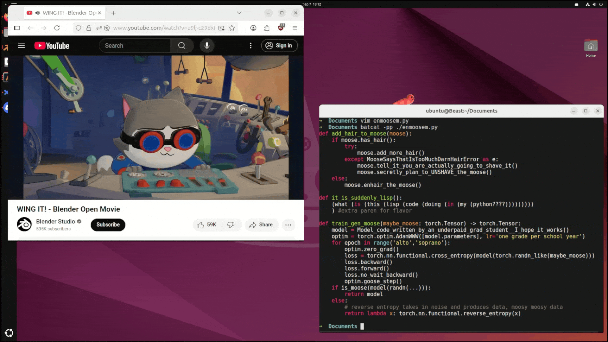
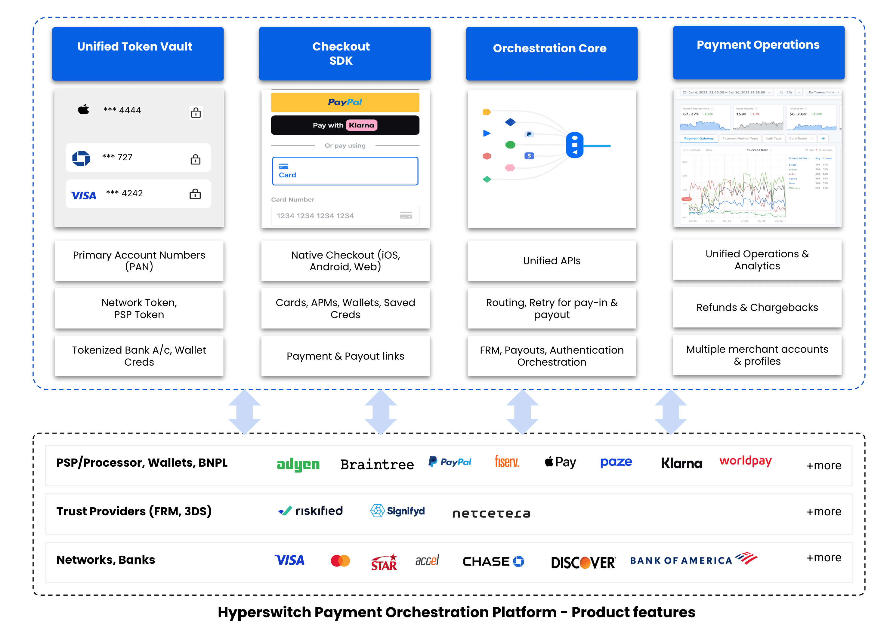
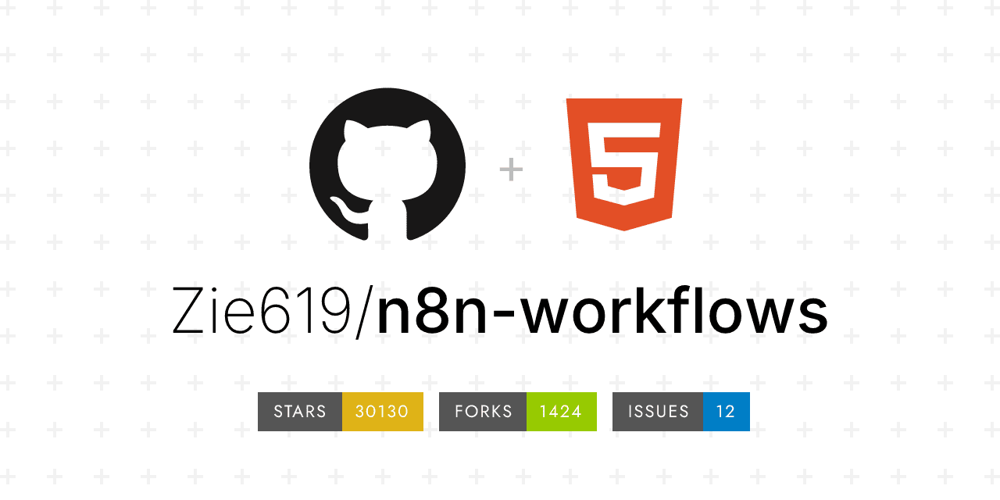
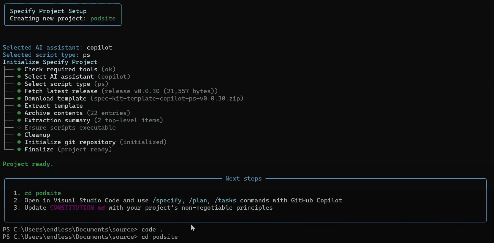
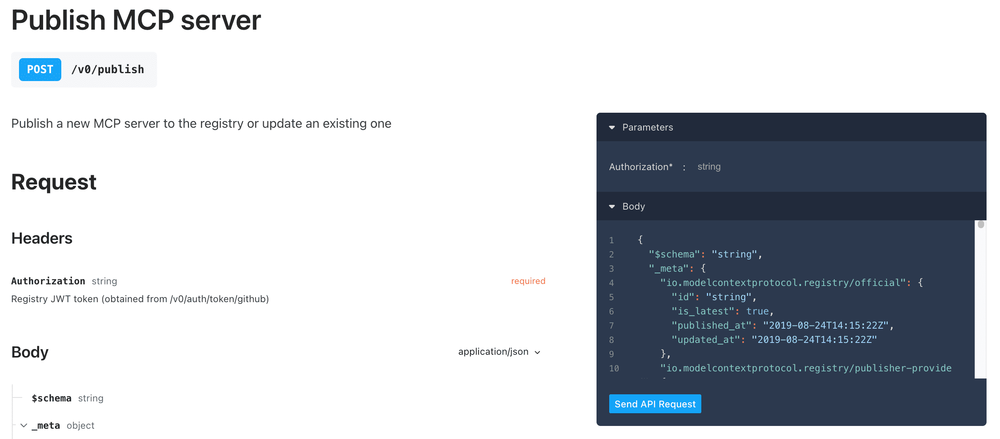
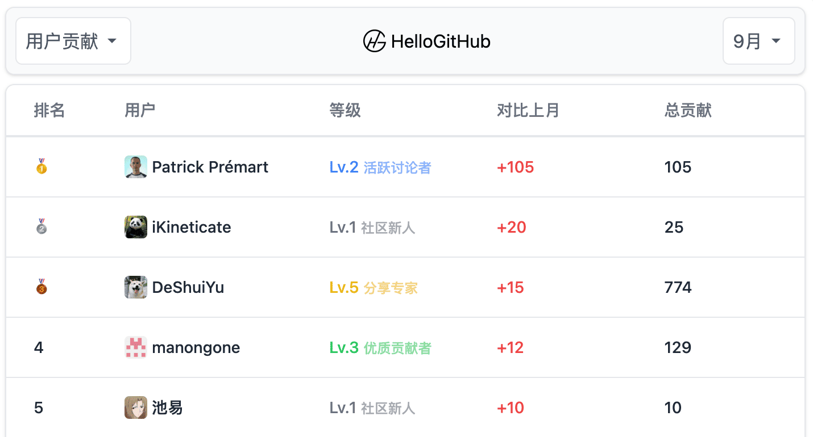
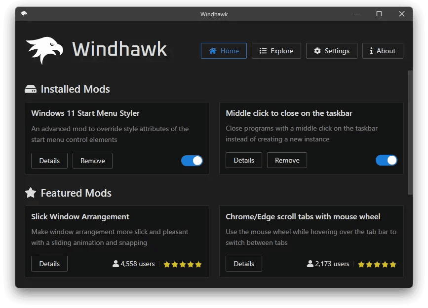

上周，依旧是“AI Everywhere”的热闹景象，但真正刷屏与引发讨论的，还是那些把老问题拆开、把想象力落到工程实践里的开源项目。
本期上榜的 Term.Everything 把原本只能在桌面环境运行的 GUI 应用“压缩”进终端，重新定义终端（Terminal）的边界。Hyperswitch 用一套高性能网关打通多支付渠道的复杂链路。开源的 n8n 工作流宝库 n8n-workflows，收集了 2000+ 实战模板帮助加速 AI 自动化落地。官方发起的 MCP registry 则补上 MCP 生态中“发现与分发”这一关键拼图。而 GitHub 开源的 spec-kit 把“先写规范再写代码”流程化，并将模糊需求逐步转化为可评审、可测试、可追溯的高质量代码，然后一周涨了 10k Star🤯。
此外，一起看看本周 HelloGitHub 热评脱颖而出的开源项目，Windhawk 让 Windows 定制像装插件一样简单，OpenIsle 则是一个用 Java 构建的轻量级开源社区系统。
· 本文目录
· 1\. 热门开源项目
· 1.1 终端里运行任何 GUI 应用：Term.Everything
· 1.2 开源的企业级支付网关：Hyperswitch
· 1.3 开源的 n8n 工作流宝库：n8n-workflows
· 1.4 GitHub 开源的 AI 时代开发流程框架：spec-kit
· 1.5 官方的 MCP 应用商店：registry
· 2\. HelloGitHub 热评
· 2.1 Windows 应用的自定义与扩展工具：Windhawk
· 2.2 Java 开发的轻量级开源社区系统：OpenIsle
· 3\. 结尾
1. 热门开源项目
1.1 终端里运行任何 GUI 应用：Term.Everything

主语言：TypeScript，Star：5k，周增长：5k
该项目突破了传统终端只能运行命令行程序的限制，让用户能够在终端（Terminal）中运行任意 GUI 应用程序，将图形界面的操作体验带入终端环境。它通过自研的 Wayland 合成器，将原本输出到显示器的 GUI 窗口实时渲染为终端可显示的字符或图片，实现了在终端内运行图形应用的能力，兼容 iTerm2、Alacritty、Kitty 等主流终端模拟器。
GitHub 地址→github.com/mmulet/term.everything
1.2 开源的企业级支付网关：Hyperswitch

主语言：Rust，Star：34k，周增长：1.5k
这是一个用 Rust 编写的高性能支付网关系统，将多种支付渠道统一为一套 API。它提供智能路由、自动重试、失败转移、风控管理和可视化后台，内置 50+ 支付方式，新增支付渠道无需改动现有业务代码，支持多种币种、费率配置、退款、调单、拒付等功能，适用于电商、跨境出海、无人零售等场景。
GitHub 地址→github.com/juspay/hyperswitch
1.3 开源的 n8n 工作流宝库：n8n-workflows

主语言：Python，Star：30k，周增长：1.7k
该项目收集了 2000+ 高质量、开箱即用的 n8n 自动工作流模板，涵盖官方示例、社区精华和用户实用场景。它内置一个基于 FastAPI 的本地搜索服务，支持全文搜索、分类筛选和 Mermaid 可视化展示，可一键下载 JSON 文件，方便导入你的 n8n 实例。
GitHub 地址→github.com/Zie619/n8n-workflows
1.4 GitHub 开源的 AI 时代开发流程框架：spec-kit

主语言：Python，Star：18k，周增长：12k
这是一套规范驱动开发（SDD）的编程工具，让开发者先用自然语言写清楚“做什么”和“为什么”，再由 AI 编写代码。它将 AI 开发流程规范化，统一规格模板、强制评审通过后方可合并代码，并将规格文档作为上下文输入 LLM，从而将模糊需求逐步转化为可评审、可测试、可追溯的高质量代码，兼容 Copilot、Claude、Gemini 等主流 Agent。
GitHub 地址→github.com/github/spec-kit
1.5 官方的 MCP 应用商店：registry

主语言：Go，Star：4.2k，周增长：2k
该项目是官方发起、社区驱动的 MCP 服务注册平台，相当于 MCP 的应用商店，专为解决 MCP 客户端无服务可用的问题。它基于 GitHub 实现 MCP 服务元数据的提交、审核和展示，任何人都可以通过 Fork+PR 发布自己的 MCP 服务，让全球 MCP 客户端即时发现。
GitHub 地址→github.com/modelcontextprotocol/registry
2. HelloGitHub 热评
在此章节中，我们将为大家介绍本周 HelloGitHub 网站上的热门开源项目，我们不仅希望您能从中收获开源神器和编程知识，更渴望“听”到您的声音。欢迎您与我们分享使用这些开源项目的亲身体验和评价，用最真实反馈为开源项目的作者注入动力。

2.1 Windows 应用的自定义与扩展工具：Windhawk

主语言：C++
这是一款专为 Windows 平台设计的软件定制与扩展框架，类似 Windows 版的 LSPosed。它通过全局注入和 Hook 技术，将原本需要手动修改二进制或注册表才能实现的界面与功能调整，做成可一键安装的 mod（插件）。用户可以像安装插件一样，轻松获取、安装和管理各种 mod，实现自定义目标程序的界面、功能和交互方式。
项目详情→hellogithub.com/repository/ramensoftware/windhawk
2.2 Java 开发的轻量级开源社区系统：OpenIsle
主语言：Java
这是一个基于 Spring Boot 和 Vue3 构建的开源自由社区系统，定位为轻量级的 Discourse。它完全开源、可二次开发，支持白名单邀请、自定义标签、实时通知等功能。
项目详情→hellogithub.com/repository/nagisa77/OpenIsle
3. 结尾
以上就是本期「GitHub 热点速览」的全部内容，希望这些开源项目能激发你的兴趣，帮助你找到下一个想要尝试的工具！如果你也发现了好玩、有趣的 GitHub 开源项目想要分享，欢迎来 HelloGitHub 与我们交流心得、讨论使用体验。
往期回顾
· 直击痛点的开源项目
· 微软开源的 MCP 教程